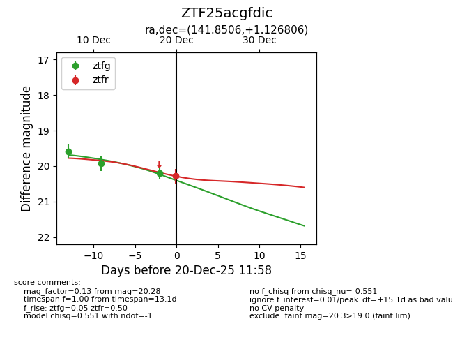
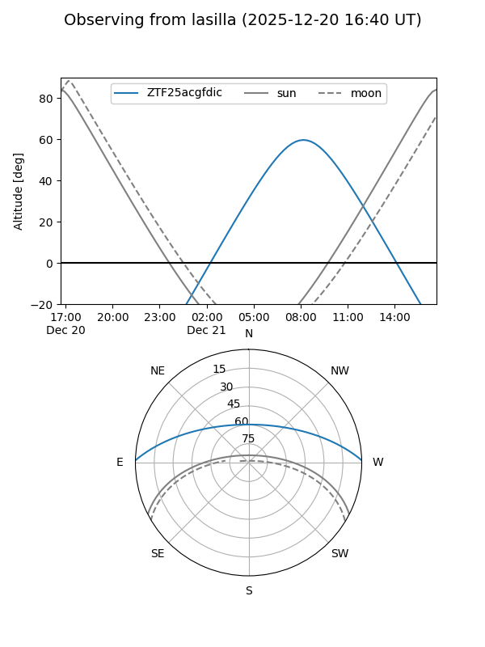
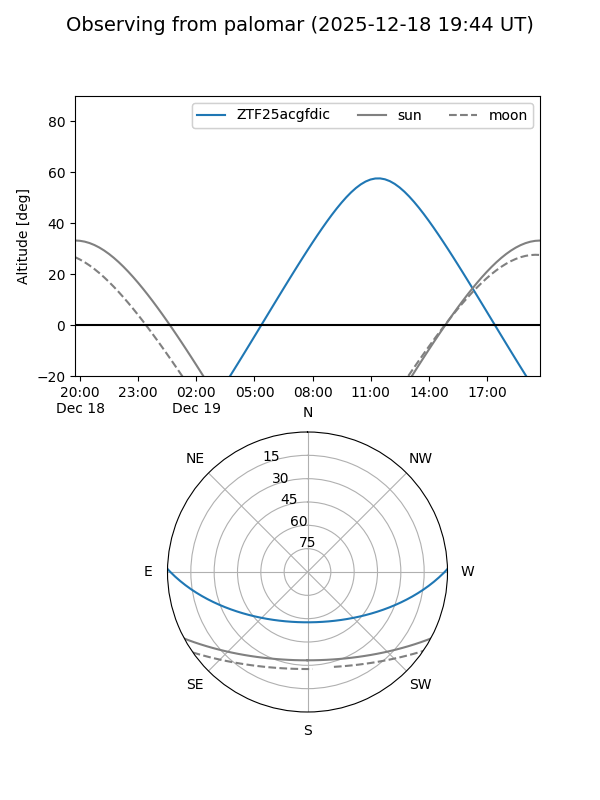
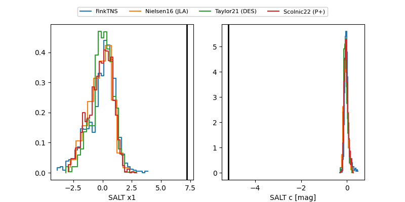

ZTF25acgfdic
Target ZTF25acgfdic at 2025-12-20 11:59
Aliases and brokers:
FINK: fink-portal.org/ZTF25acgfdic
Lasair: lasair-ztf.lsst.ac.uk/objects/ZTF25acgfdic
ALeRCE: alerce.online/object/ZTF25acgfdic
alt names
ZTF25acgfdic (ztf,fink_ztf)
Coordinates:
equatorial (ra, dec) = 141.8506,+1.12681
equatorial (HMS+DMS) = 09:27:24.15,+01:07:36.50
galactic (l, b) = (232.0487,+34.66933)
Flags:
Photometry:
last ztfg=20.20, ztfr=20.28
3 ztfg, 1 ztfr detections
Lightcurve

Visibility


Additional plots
